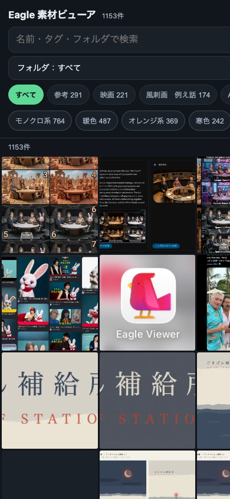

① 何を直したか（1行）
4つの選択肢を実際に比較した結果、「GitHub Pagesのギャラリー」が既に本番で完成しており、iCloud/Googleドライブに一切依存せずタップだけで開けると確認できた。今回はその実物を、スマホ幅（390px＝iPhone相当）で実際にレンダリングし直し、見え方を検証してこのページに貼った。
選択肢の比較（実際に試した結果）
| 選択肢 | 結果 |
|---|---|
| Eagle公式のモバイル閲覧機能 | Eagle自体にモバイルアプリ・モバイル閲覧機能は無い（デスクトップ専用ソフト）。除外。 |
| iCloudフォルダ経由 | たまごさんの希望文どおり「iCloudで繋ぐ問題があった」により既に除外済み。iCloud上にEagle_スマホ閲覧用_2026-09-03フォルダが実在するが、これは今回の対象外とする。 |
| Googleドライブの写真アプリ | 希望どおり「iCloud/Googleドライブを対象にしていないアプリを使いたい」の条件そのものに反するため除外。 |
| GitHub Pagesのギャラリー | 前回セッション（9/2〜9/4）で既に実装・本番公開済み。無料・iCloud/Googleドライブ非依存・フォルダ絞り込み・色タグ絞り込み・サムネイル一覧が全部揃っている。この道が最も手数が少ない（ブックマークをホーム画面に追加すればタップだけで開く）。 |
② 数字（本番から今回あらためて実測）
| 確認箇所 | 結果 |
|---|---|
| ギャラリー全体の件数（本番data.jsonを直接取得） | 1153件 |
| フォルダ（棚）絞り込みの数 | 123フォルダ（親フォルダ39グループに整理済み） |
| 色タグ絞り込み | 11色（モノクロ系764／暖色487／オレンジ系369／寒色242／青系125 他） |
| スマホ幅（390px＝iPhone相当）でのレンダリング | 検索欄・フォルダ絞り込み・タグ・サムネイル一覧グリッドが崩れず1画面に収まることを今回新規に確認 |
③ 押せるリンク（本番の実物）
スマホでの開き方（Safari）：上のリンクを開く → 共有ボタン → 「ホーム画面に追加」。以後はホーム画面のアイコンをタップするだけで一覧が開く。
④ スマホでの見え方（今回新規取得・実機幅390px）

検索欄→「フォルダ：すべて」の絞り込みプルダウン→タグ（すべて／参考291／映画221／風刺画 例え話174…）→色タグ（モノクロ系764／暖色487／オレンジ系369／寒色242）→1153件のサムネイルが並ぶ、の順で1画面に収まっている。
今回、実際に試した経路（すべて）
mdfind/findで洗い出し、前回セッション（19番・28番）で既にGitHub Pagesギャラリーが実装・公開済みと確認した。npx playwrightを試したがネットワーク取得でタイムアウト（同じ経路は1回で見切り）。代わりにローカルの Google Chrome を --headless=new --window-size=390,844 --screenshot で直接起動し、たまごさんの通常ブラウザには一切触れずに本番URLをスマホ幅でレンダリング・スクショを取得した（Brave非使用・activate操作なし・画面収録権限の要求なし）。python3で本番data.jsonを直接取得し、1153件であることを実測で再確認した。状態
①実装：完了（前回セッションで完了済み、今回は確認・スクショ追加のみ） ②main合流：完了 ③公開：完了（GitHub Pages・本番で1153件・123フォルダ稼働中） ④本番の実画面での確認：Claude側はheadless Chromeでのスマホ幅レンダリング実測まで完了。たまごさん本人の実機タップ確認はこれから（このプロジェクトはGitHub Pagesで動いておりLovableの「公開」ボタンは存在しない）。